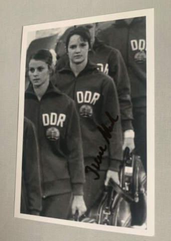

Irene Abel (GDR)
1972 Olympic Team Silver Medalist

Medal Total
Competition Results
1966
Seelenbinder Memorial Tournament: 1st AA (Youth Class II)
1968
DTV Cup: 6th AA
Jr. Friendship Tournament (Druzhba): 2nd Team, 2nd B
Jr. GDR Championships: 6th AA
1969
DTV Cup: 6th AA, 3rd B
GDR-SWE Dual Meet: 1st Team, 7th AA
Jr. Friendship Tournament (Druzhba): 3rd Team, 5th UB
1971
BUL-GDR Dual Meet: 1st Team, 3rd AA, 1st V
Dinamo Spartakiade: 2nd AA
GDR Championships: 6th AA, 2nd FX, 3rd V
1972
DTV Cup: 5th AA
GDR Championships: 6th AA, 6th UB, 6th B
NOR-GDR Dual Meet: 1st Team, 7th AA
Olympic Games: 2nd Team, 11th AA
SWE-GDR Dual Meet: 1st Team, 3rd AA
USSR-GDR Dual Meet: 1st Team, 8th AA
1973
Berlin-Leipzig-Halle-Rostock Meet: 6th AA
Chunichi Cup: 5th AA
DTV Cup: 4th AA
GDR-JPN Dual Meet: 1st Team, 2nd AA
Schwerin International: 1st AA, 1st UB, 1st FX
USSR-GDR-HUN-CSSR: 2nd Team, 5th AA
1974
DTV Cup: 2nd AA
GDR Championships: 4th AA
GDR-USSR-CSSR: 2nd Team, 17th AA
World Championships: 2nd Team, 14th AA
This page was created on July 02, 2021.
© Gymn Forum